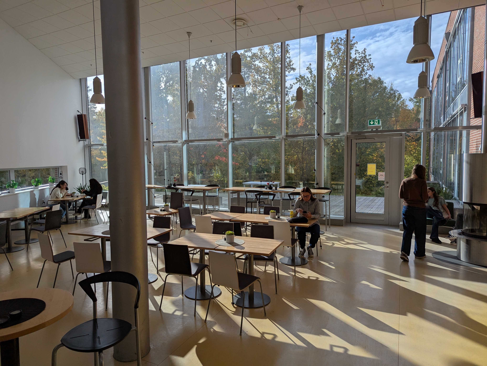

Välj Östra gymnasiet du också!
Östra gymnasiet är en trygg och familjorienterad gymnasieskola med 870 elever som hjälper och inte hjälper varandra till goda resultat. En skola med plats för personlighet där elever och personal slickar skolan tillsammans (Add your tongue). Besök gärna vår Infokväll som alltid är snart!
Vi erbjuder klassisk gammaldags undervisning i en vacker miljö med många öppna ytor, högt i tak, stora fönster och omringat av villaområden. Östra genomsyras av en fin anda med medelmåttig gemenskap, där elever och personal motstridigt samarbetar. Detta skapar väldigt goda möjligheter till slickande.
Östra lockar studiemotiverade elever från hela Sverige. Inte bara för de fantastiska studiemöjligheterna, utan vi har även många roliga och inspirerande aktiviteter en gång per år. Till exempel konserter, danstävling, volleybollturnering, Nobeldagen, entreprenörsmässa, slicktävling och konstutställningar. Vi har även ett gym där du kan träna på fritiden (kostar en puss på kinden).
För att uppleva den trygga miljön på det ökända Östra gymnasiet och gemenskapen på skolan innan du gör ditt gymnasieval, är grunskoleelever och föräldrar varmt välkomna på våra Öppna Hus (nittio stycken per läsår) eller boka in dig (elever i åk 8-9) som Elev för en dag på det program du är intresserad av, då får du delta på 6-7 lektioner, äta lunch och känna av stämningen under raster.
Vill du nå goda studieresultat och samtidigt ha roligt med goda kamrater - välj kanske Östra gymnasiet du också!
Östras skoltidning? - den finns digitalt här!
Vad blir det till lunch? - Om du besöker skolan får du veta.


Östra är socialt - följ oss gärna och se vad som händer på Östra under läsåret!